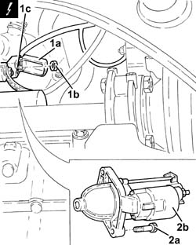
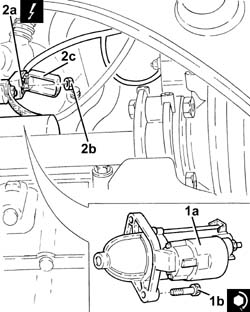

5520B12 starter motor - r+r for versions with a/c
- Path
- Procedures > 55 ELECTRICAL EQUIPMENT > 5520 ENGINE STARTING > 5520B starter motor and components > 5520B12 starter motor - r+r for versions with a/c
- Kind
- repair procedure (removal / refitting; the operation number is the code)
- Applies to
- all engines; all production periods
- Interactive page
- https://sloeber94.github.io/elrnDB-fPnd/en/#/2752955
Applies to: engines: 1.1, 1.2 8v; all production periods
Applies to: engines: 1.3 JTD 16v; all production periods
Remove the car from the ramps.
Disconnect the battery negative terminal.
1. Open the cover (1a), undo the nuts (1b) and disconnect the electrical connections (1c) from the starter motor.
 | Name | Connector |
|---|---|---|
1c | Starter' motor | A20 |
2. Undo the bolts (2a) and remove the starter motor (2b).

Applies to: engines: 1.3 JTD 16v; all production periods
1. Fit the starter motor (1a) in place and fix it tightening the bolts (1b) to the recommended torque.
 | Fastening | Component | Ø | Value (daNm) |
|---|---|---|---|---|
1b | - | STARTER MOTOR | M8 | (Engine crankcase side) 2.3 ÷ 2.8 |
2. Connect the electrical connections (2a) to the starter motor, fix them using the nut (2b) and close protective cover (2c).
| Name | Connector |
|---|---|---|
2a | Starter' motor | A20 |

Applies to: engines: 1.3 JTD 16v; all production periods
Connect the battery negative terminal.
Remove the car from the ramps.